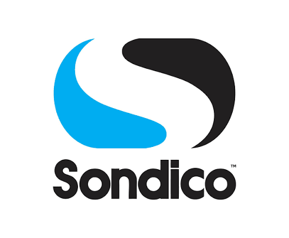
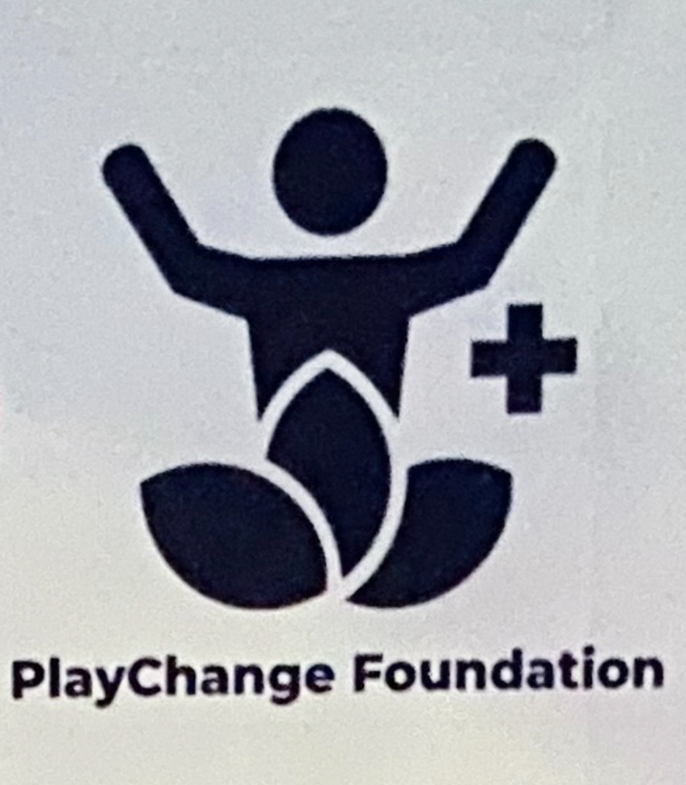
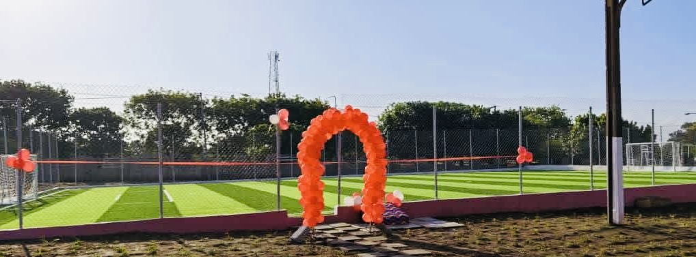

🤝 Our Partners & Sponsors



Experience four unforgettable days of youth football as talented boys and girls compete, learn and showcase their abilities at the GEFA Cup 2026.
Academies
Young Players
Matches
Competition Days
The GEFA Cup is a premier youth football tournament organized by Gunners Eagle Football Academy (GEFA). Our mission is to develop young football talent, promote fair play, and provide a platform for the next generation of football stars in Ghana.
GEFA Cup 2026
19–22 December 2026
5BN Sports Complex, Accra, Ghana
U8–U10 & U11–U14

Accra, Ghana
The official home of GEFA Cup 2026. A modern football facility providing a safe and professional environment for young football talents to compete and showcase their abilities.
Compete against top youth football academies from across Ghana.
Gain valuable match experience and showcase your talent.
Play in a professionally organized tournament that encourages respect, teamwork, and sportsmanship.
Photos and videos from the GEFA Cup 2026 will be published here throughout the tournament.
View Gallery


Organizer: Gunners Eagle Football Academy (GEFA)
📍 5BN Sports Complex, Accra, Ghana
📞 0533383362
📧 gunnerseaglefa@gmail.com